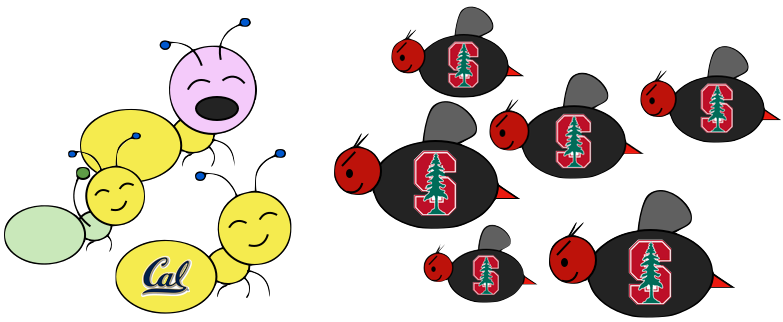
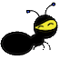
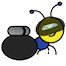
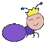
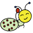

The bees are coming!
Create a better soldier
With inherit-ants.
In this project, you will create a tower defense defense game called Ants Vs. SomeBees. As the ant queen, you populate your colony with the bravest ants you can muster. Your ants must protect their queen from the evil bees that invade your territory. Irritate the bees enough by throwing leaves at them, and they will be vanquished. Fail to pester the airborne intruders adequately, and your queen will succumb to the bees' wrath. This game is inspired by PopCap Games' Plants Vs. Zombies ®.
This project combines functional and object-oriented programming paradigms, focusing on the material from Chapter 2.5 of the lecture notes. The project also involves understanding, extending, and testing a large program with many related parts.
This project includes several files, but all of your changes will be made to the first one. You can download all of the project code as a zip archive.
ants.py |
The game logic of Ants Vs. SomeBees. |
ants_gui.py |
Graphics for Ants Vs. SomeBees. |
graphics.py |
General functions for displaying simple two-dimensional animations. |
ucb.py |
Utility functions for CS 61A. |
autograder.py |
Utility functions for grading. |
img |
A directory of images used by the graphical version of the game. |
This is a two-week project. You'll work in a team of two people, person A and person B. In each part, you will do some of the work separately and some together with your partner. For example, if a problem is marked A1, then it is a solo problem for person A. Both partners should read, think about, and understand the solution to all questions. Feel free to help each other on the solo questions. If you choose to work on the whole project alone, you must complete all questions yourself. Note: only Person A should submit the project.
Start early! The amount of time it takes to complete a project (or any program) is unpredictable. Ask for help early and often — the TAs and lab assistants are here to help. You are not alone!
In the end, you and your partner will submit one project. Person-specific problems are graded individually and do not affect your partner's score. There are 25 possible points for each person, 22 of which are assigned for correctness, and three points for the overall composition of your program. There are also two points of extra credit available at the end of the project, due with your submission.
The only file that you are required to submit is ants.py. You do not
need to modify any other files to complete the project. To submit the
project, change to the directory where the files are located and run
submit proj3.
A game of Ants Vs. SomeBees consists of a series of turns. In each turn, new bees may enter the ant colony. Then, new ants are placed. Finally, all insects (ants, then bees) take individual actions: bees sting ants, and ants throw leaves at bees. The game ends either when a bee reaches the ant queen (you lose), or the entire bee flotilla has been vanquished (you win).
The Colony. The colony consists of several places that are chained
together. The exit of each Place leads to another Place.
Placing Ants. There are two constraints that limit ant production.
Placing an ant uses up some amount of the colony's food, a different
amount for each type of ant. Also, only one ant can occupy each
Place.
Bees. When it is time to act, a bee either moves to the exit of
its current Place if no ant blocks its path, or stings an ant that
blocks its path.
Ants. Each type of ant takes a different action and requires a
different amount of food to place. The two most basic ant types are
the HarvesterAnt, which adds one food to the colony during each turn,
and the ThrowerAnt, which throws a leaf at a bee each turn.
Most concepts in the game have a corresponding class that encapsulates
the logic for that concept. For instance, a Place in the colony
holds insects and connects to other places. A Bee stings ants and
advances through exits.
The game can be run in two modes: as a text-based game or using a graphical user interface (GUI). The game logic is the same in either case, but the GUI enforces a turn time limit that makes playing the game more exciting. The text-based interface is provided for debugging and development.
The files are separated according to these two modes. ants.py knows
nothing of graphics or turn time limits. All graphical elements are
specified in ants_gui.py and graphics.py. It is possible to
complete this project without ever reading the graphics files.
To start a text-based game, run
python3 ants.pyTo start a graphical game, run
python3 ants_gui.pyWhen you start the graphical version, a new window should appear:
In the starter implementation, you have unlimited food and your ants
only throw leaves at bees in their current Place. Try playing a game
anyway! You'll need to place a lot of ThrowerAnts (the second type)
in order to keep the bees from reaching your queen.
The game has several options that you will use throughout the project,
which you can view with --help.
python3 [ants.py|ants_gui.py] [OPTIONS]
Run the Ants vs. SomeBees project.
-h, --help Prints this help message
-t, --ten Start with ten food
-f, --full Loads a full layout and assault plan
-w, --water Loads a full layout with water
-i, --insane Loads a difficult assault planWe've included an autograder which includes tests for each question. Just as in the Hog project, you will have to unlock some of the tests first before you can use them to test your project. To unlock tests for a particular question, run the following command from your terminal:
python3 autograder.py -u q1Once you have unlocked the tests, you can invoke autograder for a particular question as follows:
python3 autograder.py -q1To help with debugging, you can also start an interactive prompt if
an error occurs by adding the -t flag at the end:
python3 autograder.py -q1 -iYou can also invoke the autograder for all problems at once using:
python3 autograder.pyOne last note: you might have noticed a file called tests.pkl that
came with the project. This file is used to store autograder tests, so
make sure not to modify it. If you need to get a fresh copy, you
can download it here.
Answer the following questions with your partner after you have read
the entire ants.py file. If you cannot answer these questions,
read the file again. You must get checked off by a TA or lab assistant
in lab on 7/21 or 7/22 to receive credit for this question.
run,
because run is not a method)!Hive, a subclass of Place, is the starting location of the
bees. Unlike most instances of Place, the Hive class does not
have an exit. Explain how and when Bees leave the Hive.Insect's armor attribute? What
happens when armor reaches 0?Ants and Bees inherit from the Insect class. What does
this mean? What similarities and differences are there between
Ants and Bees?Ant class. Identify an Ant's class attributes and
instance attributes. What is the difference between the two?Add food costs and implement harvesters. Currently, there is no cost
for deploying any type of Ant, and so there is no challenge to the
game. You'll notice that Ant starts out with a base food_cost of
zero. Override this value in each of the subclasses listed below with
the correct costs.
| Class | Food | Armor |
HarvesterAnt |
2 | 1 |
ThrowerAnt |
4 | 1 |
Now there's no way to gather more food! To fix this issue, implement
the HarvesterAnt class. A HarvesterAnt is a type of Ant that
adds one food to the colony.food total as its action.
After unlocking tests for Q2, you can use the autograder:
python3 autograder.py -u 2
python3 autograder.py -q 2 -iTry playing the game again. Once you have placed a HarvesterAnt, you
should accumulate food each turn. Vanquishing the bees using the
default game setup is now possible.
Add code to the Place constructor that tracks entrances. Right now,
a Place keeps track only of its exit. We would like a Place to
keep track of its entrance as well. A Place needs to track only one
entrance.
However, simply passing an entrance to a Place constructor will be
problematic; we will need to have both the exit and the entrance before
we can create a Place! (It's a chicken or the
egg
problem.) To get around this problem, we will keep track of entrances
in the following way instead. The Place constructor should specify
that:
Place always starts with its entrance as None.Place has an exit, then the exit's entrance is set to
that Place.After unlocking tests for Q3, you can use the autograder:
python3 autograder.py -u 3
python3 autograder.py -q 3 -iAdd water to the colony. Currently there are only two types of places,
the Hive and a basic Place. To make things more interesting, we're
going to create a new type of Place called Water.
Only an ant that is watersafe can be deployed to a Water place. In
order to determine whether an Insect is watersafe, add a new
attribute to the Insect class named watersafe that is False by
default. Since bees can fly, make their watersafe attribute True,
overriding the default.
Now, implement the add_insect method for Water. First call
Place.add_insect to add the insect, regardless of whether it is
watersafe. Then, if the insect is not watersafe, reduce the insect's
armor to 0 by invoking reduce_armor. Do not copy and paste code.
Try to use methods that have already been defined and make use of
inheritance to reuse the functionality of the Place class.
After unlocking tests for Q4, you can use the autograder:
python3 autograder.py -u A4
python3 autograder.py -q A4 -iOnce you've finished this problem, play a game that includes water. To
access the mixed_layout that includes water, add the --water option
(or -w for short) when you start the game.
python3 ants_gui.py --waterImplement the FireAnt. A FireAnt has a special reduce_armor
method: when the FireAnt's armor reaches zero or lower, it will
reduce the armor of all Bees in the same Place as the FireAnt
by its damage attribute (defaults to 3).
| Class | Food | Armor |
 FireAnt |
4 | 1 |
Hint: If you iterate over a list, but change the contents of that list at the same time, you may not see all the elements. As the Python tutorial suggests, "If you need to modify the list you are iterating over, you must iterate over a copy." Remember that damaging a bee may cause it to be removed from its place.
Once you've finished implementing the FireAnt, give it a class
attribute implemented with the value True. This attribute tells
the game that you've added a new type of Ant.
After unlocking tests for QA5, you can use the autograder:
python3 autograder.py -u A5
python3 autograder.py -q A5 -iAfter implementing FireAnt, be sure to test your program by playing a
game or two! A FireAnt should destroy any co-located Bees when it
dies. To start a game with ten food, use --ten.
Implement the nearest_bee method for the ThrowerAnt class. In
order for a ThrowerAnt to attack, it must know which bee it should
hit. The provided implementation will only hit bees in the same
Place. Your job is to fix it so that a ThrowerAnt will throw_at
the nearest bee in front of it that is not still in the Hive.
The nearest_bee method returns a random Bee from the nearest place
that contains bees. Places are inspected in order by following their
entrance attributes.
Place of the ThrowerAnt.entrance.After unlocking tests for QB4, you can use the autograder:
python3 autograder.py -u B4
python3 autograder.py -q B4 -iAfter implementing nearest_bee, a ThrowerAnt should be able to
throw_at a Bee in front of it that is not still in the Hive.
Make sure that your ants do the right thing! To start a game with ten
food, use --ten.
Now that the ThrowerAnt has been completed, implement two subclasses
of ThrowerAnt.
LongThrower can only throw_at a Bee that is found after
following at least 4 entrance transitions. So the LongThrower
can't hit Bees that are in the same Place as it or the first 3
Places in front of it. If there are two Bees, one too close to
the LongThrower and the other within its range, the LongThrower
should throw past the closer Bee, instead targeting the farther
one, which is within its range.ShortThrower can only throw_at a Bee that is found after
following at most 2 entrance transitions. So the ShortThrower
can only hit Bees in the same Place as it and 2 Places in front
of it.Neither of these specialized throwers can throw_at a Bee that is
exactly 3 Places away. Placing a single one of these (and no other
ants) should never win a default game.
| Class | Food | Armor |
 ShortThrower |
3 | 1 |
 LongThrower |
3 | 1 |
To implement these behaviors, modify the nearest_bee method to
reference min_range and max_range attributes, and only return a bee
that is in range.
For the base class, ThrowerAnt, set min_range to 0 and max_range
to float('inf'), since a ThrowerAnt can throw at any bee in front of
it. Then, implement the subclasses LongThrower and ShortThrower
with appropriately constrained ranges and correct food costs.
Set the implemented class attribute of LongThrower and
ShortThrower to True.
After unlocking tests for QB5, you can use the autograder:
python3 autograder.py -u B5
python3 autograder.py -q B5 -iTry playing a game with your newly implemented ants. Be sure that they
do what you expect them to! You can try running ants_gui.py with the
--full option to go up against a full swarm of bees in a multi-tunnel
layout, and add --insane if you want a real challenge! If the bees
are too numerous to vanquish, you might need to create some new ants in
Phase 2.
We are going to add some protection to our glorious AntColony by
implementing the WallAnt, which is an ant that does nothing each turn
(already the default action of the Ant class). A WallAnt is
useful because it has a large armor value.
| Class | Food | Armor |
WallAnt |
4 | 4 |
Unlike with previous ants, we have not provided you with a class header.
Make sure that you give it a class attribute name with the value Wall
and a class attribute implemented with the value True after you've
finished.
After unlocking tests for QA6, you can use the autograder:
python3 autograder.py -u A6
python3 autograder.py -q A6 -iImplement the NinjaAnt, which damages all Bees that pass by, but is
never seen.
| Class | Food | Armor |
 NinjaAnt |
6 | 1 |
A NinjaAnt is not able to be attacked by a Bee because it is
hidden, nor does it block the path of a Bee that flies by. To
implement this behavior, first modify the Ant class to include a new
class attribute blocks_path that is True by default. Set the value
of blocks_path to False in the NinjaAnt class.
Second, modify the Bee's method blocked to return False if either
there is no Ant in the Bee's place or if there is an Ant, but
its blocks_path attribute is False. Now Bees will just fly past
NinjaAnts.
Finally, we want to make the NinjaAnt damage all Bee's that fly
past. Implement the action method in NinjaAnt to reduce the armor
of all Bees in the same place as the NinjaAnt by 1, overriding
the default action method inherited from Ant. Make sure you also
override the damage class variable (and use damage, of course).
After unlocking tests for QA7, you can use the autograder:
python3 autograder.py -u A7
python3 autograder.py -q A7 -iFor a challenge, try to win a default game using only HarversterAnt
and NinjaAnt.
Currently there are no ants that can be placed on Water. Implement
the ScubaThrower, which is a subclass of ThrowerAnt that is more
costly and watersafe, but otherwise identical to its base class.
| Class | Food | Armor |
 ScubaThrower |
5 | 1 |
Placing a ScubaAnt in Water should not cause it to die.
Like with WallAnt, we have not provided you with a class header.
Make sure that you give it a class attribute name with the value
Scuba and a class attribute implemented with the value True
after you've finished.
After unlocking tests for QB6, you can use the autograder:
python3 autograder.py -u B6
python3 autograder.py -q B6 -iWe will now implement the new offensive unit called the HungryAnt,
which will eat a random Bee from its place, instantly killing the
Bee. After eating a Bee, it must spend 3 turns digesting before
eating again.
| Class | Food | Armor |
 HungryAnt |
4 | 1 |
To implement, give HungryAnt a time_to_digest class attribute that
holds the number of turns that it takes all HungryAnts to digest
(default to 3). Also, give each HungryAnt an instance attribute
digesting that counts the number of turns it has left to digest
(default is 0, since it hasn't eaten anything at the beginning).
Now we implement the action method of the HungryAnt to check if
it's digesting; if so, decrement its digesting counter. Otherwise,
eat a random Bee in its place (killing the Bee and restarting the
digesting timer).
After unlocking tests for QB7, you can use the autograder:
python3 autograder.py -u B7
python3 autograder.py -q B7 -iImplement the BodyguardAnt. Right now, our ants are quite frail. We'd
like to provide a way to help them last longer against the onslaught of
the bees. Enter the BodyguardAnt.
| Class | Food | Armor |
 BodyguardAnt |
4 | 2 |
A BodyguardAnt differs from a normal Ant because it can occupy the
same Place as another ant. When a BodyguardAnt is added to the
same Place as another ant, it shields the other ant and protects it
from damage. Attacks should damage the BodyguardAnt first and only
hurt the protected ant after the BodyguardAnt has perished.
A BodyguardAnt has an instance attribute ant that stores the ant
contained within the bodyguard. It should start off as None,
indicating that no ant is currently being protected. Give
BodyguardAnt a contain_ant method that takes an Ant argument and
sets the ant instance attribute to that argument.
Now, change your program so that a BodyguardAnt and another Ant can
simultaneously occupy the same Place:
Ant.container class attribute that indicates whether an ant
can contain another. For all Ants except BodyguardAnt,
container should be False. The BodyguardAnt.container
attribute should be True.We also need to give Ants a new method, can_contain, that takes
an other ant as an argument and returns True if and only if:
Right now, if we attempt to put a second ant in a Place, the
add_insect method of the Place class will immediately cause an
error. Change add_insect so that the Place contains the
container ant and the container ant contains the other ant:
Ant currently occupying this Place can contain the
Ant we are trying to add, then simply tell it to do so.Ant we are trying to add can contain the Ant currently
occupying this Place, then have it do so and set this
Place's ant to be the newly added Ant.Ant can contain the other, then raise the same
assertion error as before.return.Almost done! Just a few more things to do.
BodyguardAnt containing another ant is removed, then the ant
it is containing should be placed where the BodyguardAnt used to
be. Update the remove_insect method in the Place class
accordingly.BodyguardAnts still perform their action. Override the action
method for BodyguardAnt accordingly.After unlocking tests for Q8, you can use the autograder:
python3 autograder.py -u 8
python3 autograder.py -q 8 -iImplement the QueenAnt. The queen is a waterproof ScubaThrower that
inspires her fellow ants through her bravery. Whenever the queen throws
a leaf, she also doubles the damage of all other ants in the same
tunnel with her, including any ants protected by a bodyguard. Once any
ant's damage has doubled, it cannot be doubled again.
| Class | Food | Armor |
 QueenAnt |
6 | 1 |
However, with great power comes great responsibility. The Queen is governed by three special rules:
If a bee ever enters the place occupied by the queen, then the bees immediately win the game. The game ends even if the queen is protected by a bodyguard. The bees also win if any bee reaches the end of a tunnel where the queen normally would reside.
In AntColony.simulate, the bees win the game whenever
len(self.queen.bees) > 0, where self is the ant colony.
Normally, the queen attribute of an AntColony is an instance of
a Place. As part of the action of a QueenAnt, the
colony.queen should be replaced by a new object, a QueenPlace. A
QueenPlace has a bees property method that evaluates to the list
of all bees that are either in the original colony.queen location
or the place of the QueenAnt.
You should not have to change the implementation of
AntColony.simulate or manipulate the location of bees in any
special way. You may assume that a colony.queen attribute will be
used for only one purpose: to check whether len(self.queen.bees) >
0. Thus, a QueenPlace instance does not need to support other
Place methods, such as add_insect.
queen attribute. You can detect impostor queens by counting the
number of times that an instance of a QueenAnt has been
constructed, using a class attribute. Any QueenAnt beyond the
first one created is an impostor. You should not have to search
through the colony places to find other queens.remove_insect method of Place to enforce
this condition.Some suggestions:
Place in a tunnel by starting at one Place and
then repeatedly follow both its exit and entrance attributes to
the ends.Place is at the end of a tunnel, check whether
its exit or entrance is None.After unlocking tests for Q9, you can use the autograder:
python3 autograder.py -u 9
python3 autograder.py -q 9 -iImplement two final thrower ants that do no damage, but instead replace
the action method of a Bee instance that they throw_at with a new
method that alters the Bee's behavior for some duration.
We will be implementing two new ants that subclass ThrowerAnt.
SlowThrower applies a slow effect for 3 turns.StunThrower applies a stun effect for 1 turn.| Class | Food | Armor |
SlowThrower |
4 | 1 |
 StunThrower |
6 | 1 |
In order to complete the implementations of these two ants, you will need to set their class attributes appropriately and implement the following three functions:
make_slow takes an action method and returns a new action
method which performs the original action on turns where
colony.time is even and does nothing on other turns.make_stun takes an action method and returns a new action
method which does nothing.apply_effect takes an effect (either make_slow or
make_stun), a bee, and a duration. It then takes the bee's
original action along with the "affected action" (the result of
calling effect on the original action) and replaces the bee's
action with a new action method that will call the affected action
for duration turns and then will go back to calling the original
action every turn.After unlocking tests for the Extra Credit, you can use the autograder:
python3 autograder.py -u EC
python3 autograder.py -q EC -iMake sure to test your code! Your code should be able to apply multiple effects on a target (each new effect applies on top of whatever action method the bee already has at that point, and the target returns to the previous action when the new one runs out).
You are now done with the project! If you weren't able to vanquish the bees' insane-mode assault plan before, do your new ants help? Add some water or design your own layout to keep things interesting.
Feel free to design additional ants, layouts, and assault plans and post them to Piazza.
Acknowledgments: Tom Magrino and Eric Tzeng developed this project with John DeNero. Jessica Wan contributed the artwork. Joy Jeng and Mark Miyashita invented the queen ant. Many others have contributed to the project as well!